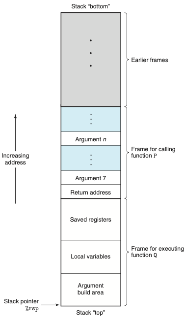
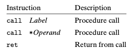
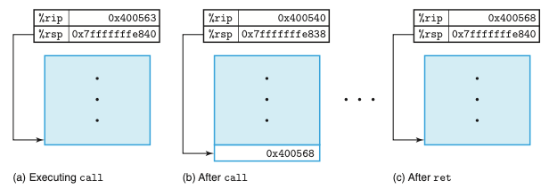
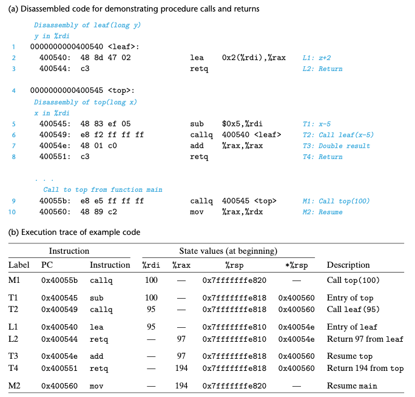
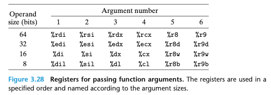
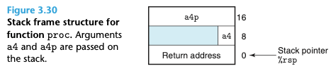
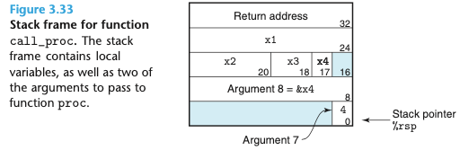

Chapter 03. 프로그램의 기계수준 표현
- 3.1 역사적 관점
- 3.2 프로그램의 인코딩
- 3.3 데이터의 형식
- 3.4 정보 접근하기
- 3.5 산술연산과 논리연산
- 3.6 제어문
- 3.7 프로시져
3.7 프로시저
- 프로시저 호출은 소프트웨어에서의 주요 추상화다.
- 이들은 지정된 인자들과 리턴 값으로 특정 기능을 구현하는 코드를 감싸주는 방법을 제공한다.
- 프로그램의 여러 지점으로부터 호출될 수 있게 된다. 프로그램 상태에 무슨 효과를 갖는지에 대한 명쾌하고 간결한 인터페이스 정의를 제공한다.
- 프로시저는 서로 다른 프로그래밍 언어에서 여러가지 다른 모습으로 사용된다.
- 함수, 메소드, 서브루틴, 핸들러등
- 이 모두는 일반적인 특징들을 공유한다.
- 프로시저에 대한 기계어수준 지원을 제공할 떄 처리되어야 하는 여러가지 많은 특성들이 존재한다.
- 프로시저P가 프로시저Q를 호출하고, 다시 리턴할 경우
- 제어권 전달: PC는 Q에 대한 코드의 시작주소로 설정되고, 리턴할 때 P에서 Q를 호출하는 인스트럭션 다음의 인스트럭션으로 설정
- 데이터 전달: P는 하나 이상의 매개변수를 Q에 제공할 수 있어야 하며, Q는 다시 P로 하나의 값을 리턴할 수 있어야 한다.
- 메모리 할당과 반납: Q는 시작할 때 지역변수들을 위한 공간을 할당, 리턴할 때 이 저장소를 반납할 수 있다.
- X86-64에서의 프로시저 구현은 레지스터와 프로그램 메모리 같은 머신의 자원들을 사용하는 방법에 관한 특수 인스트럭션들과 일련의 관습들과 연관되어있다.
- 프로시저가 요구하는 메커니즘만을 최소한으로 구현하는 최소주의자 전략으로 볼 수 있는 방식들을 따른다.
3.7.1 런타임 스택
- 프로시저 호출 동작방식의 주요 특징은 스택 자료구조가 제공하는 후입선출 메모리 관리 방식을 활용할 수 있다는 점이다.
- 프로시저 P가 프로시져 Q를 호출하는 에를 들 때
- Q가 실행되고 있는 동안 P까지의 연속된 호출 중의 프로시저 P는 일시적으로 정지되는 것을 볼 수 있다.
- Q가 실행되는 동안에는 자신의 지역변수를 위한 새로운 저장공간을 할당할 수 있는 능력이나 다른 프로시저로의 호출을 설정하는 능력만을 필요로 한다.
- Q가 리턴할 때는 자신이 할당받은 로컬 저장장소는 반납될 수 있다.
- 따라서 프로그램은 스택을 사용해서 프로시저들이 요구하는 저장장소를 관리할 수 있으며, 스택과 프로그램 레지스터들은 제어와 데이터를 전송하기 위해, 그리고 메모리를 할당하기 위해 필요한 정보를 제공한다.
- x86-64의 스택은 작은 주소 방향으로 성장하며, 스택 포인터 %rsp는 스택의 최상위 원소를 가리킨다.
- 데이터는 pushq와 popq 인스트럭션을 이용해서 스택에 저장되고 읽어올 수 있다.
- 아래 그림은 일반적인 스택 프레임 구조. 스택을 프로시저의 인자를 전달하고, 리턴 정보를 저장하며, 레지스터를 저장하고, 지역 저장공간의 목적으로 사용한다. 필요하지 않은 경우 일부분은 생략될 수 있다.

- 프로시저가 레지스터들에 저장할 수 있는 개수 이상의 저장공간을 필요로 할 때는 공간을 스택에 할당한다.
- 이 영역을 이 프로시저의 스택 프레임이라고 부른다.
- 현재 실행 중인 프로시저에 대한 프레임은 항상 스택의 맨 위에 위치한다.
- 대부분의 프로시저의 스택 프레임들은 프로시저가 시작될 때 할당되는 고정 크기를 갖는다.
- 시간과 공간 효율성을 위해 x86-64 프로시저는 요청받은 스택 프레임의 부분만을 할당한다.
스택 프레임에 대해서 조금 더 조사할 필요가 있으며, 공간 효율성에 대해서도 조사해보자.
3.7.2 제어의 이동
- 제어를 함수 P에서 함수 Q로 전달하는 것은 단순히 프로그램 카운터를 Q를 위한 코드의 시작주소로 설정하는 것과 관련된다.
- 나중에 Q가 리턴해야할 때가 오면 프로세서는 P의 실행을 다시 시작해야하는 코드 위치의 일부 기록을 갖고 있어야한다
- 인스트럭션 call Q로 프로시저 Q를 호출해서 기록된다.
- 주소 A를 스택에 푸시하고 PC를 Q의 시작으로 설정한다.
- 푸시된 주소 A는 리턴주소라고 불리며, call인스트럭션 바로 다음 인스트럭션의 주소로 계산된다.
- ret는 주소 A를 스택에서 pop해오고 PC를 A로 세팅한다. 
- call 인스트럭션은 호출된 프로시저가 싲가하는 인스트럭션의 주소를 목적지로 갖는다.
- 아래의 그림은 call과 ret 기능의 에제다. call 인스트럭션은 함수의 시작 부분으로 제어를 이동하는 반면, ret 인스트럭션은 call 다음에 오는 인스터럭션으로 제어를 되돌린다. 
- 아래의 그림은 프로시저 콜과 리턴에 연관된 프로그램의 상세한 실행이다. 
- 리턴 주소를 스택에 푸시하는 간단한 방법을 사용해서 함수가 나중에 프로그램이ㅡ 적절한 위치로 리턴이 가능하게 된다는 것을 알 수 있다.
- 스택이 제공하는 후입, 선출 메모리 관리 방식과 편리하게 일치한다.
3.7.3 데이터 전송
- 호출될 때, 그리고 프로시저가 다시 리턴하게 될 때 프로시저로 제어를 전달하는 것 뿐만 아니라, 프로시저 콜은 데이터를 인자로 전달하는 것과 관련되어 있으며, 프로시저에서 리턴하는 것도 어떤 값을 리턴하는 것과 관련되어 있을 수 있따.
- 대부분의 이들 프로시저로, 프로시저로부터의 데이터 전달은 레지스터를 통해서 일어난다.
- x86-64에서는 최대 여섯 개의 정수형(즉, 정수와 포인터) 인자가 레지스터로 전달될 수 있다.
- 함수가 여섯 개 이상의 정수형 인자를 가질 때, 다른 인자들은 스택으로 전달된다.
- 인자 1~6은 적절한 레지스터들에 복사하고, 인자 7에서 n까지는 인자 7을 스택 탑에 넣는 방법으로 저장한다.


3.7.4 스택에서의 지역저장공간
- 지역 데이터가 메모리에 저장되어야 하는 경우가 있다.
- 지역 데이터 모두를 저장하기에는 레지스터의 수가 부족하다.
- 지역변수에 연산자 ‘&’가 사용되었으며, 이 변수의 주소를 생성할 수 있어야 한다.
- 배열 또는 구조체여서 이들이 배열이나 구조체 참조로 접근되어야 한다.
- 위 세가지의 경우에 “Local variables”로 명명된 스택 프레임의 일부분이 생겨난다
3.7.5 레지스터를 이용하는 지역저장소
- 프로그램 레지스터들은 모든 프로시저들이 공유하는 단일 자원의 역할을 한다.
- 피호출자는 호출자가 나중에 사용할 계획인 일부 레지스터 값은 덮어쓰지 않는다.
- 레지스터 %rbx, %rbp, %r12-%r15는 피호출자-저장 레지스터로 구분한다.
- 리턴하기 전에 스택에서 이전 값을 팝해오는 방식으로 레지스터를 보존한다.
- 레지스터 값들을 푸시하는 것은 “Saved registers”로 이름 붙인 스택 프레임의 일부분을 생성하는 효과를 갖는다. 
3.7.6 재귀 프로시저
- 레지스터와 스택을 사용하는 것에 대해 설명한 관습으로 프로시저들이 이들을 재귀적으로 호출하는 것을 설명할 수 있다.
- 각 프로시저 콜은 스택상에 자신만의 사적인 공간을 가지며, 따라서 다수의 별도의 호출들의 지역변수들은 서로 간섭하지 않는다.
- 스택 운영방식은 프로시저가 호출될 때 지역저장소를 할당하고, 리턴하기 전에 이것을 반환하는 적절한 정책을 자연스럽게 제공한다.
- 스택 기법을 사용해서 함수의 각 호출 시에 상태정보를 위한 자신만의 개별적 저장곤간을 제공한다.
- 필요한 경우에는 지역변수를 위한 저장공간도 제공할 수 있다.
- 스택의 할당과 반환 동작은 자연스럽게 함수의 호출-리턴 순서와 일치한다.